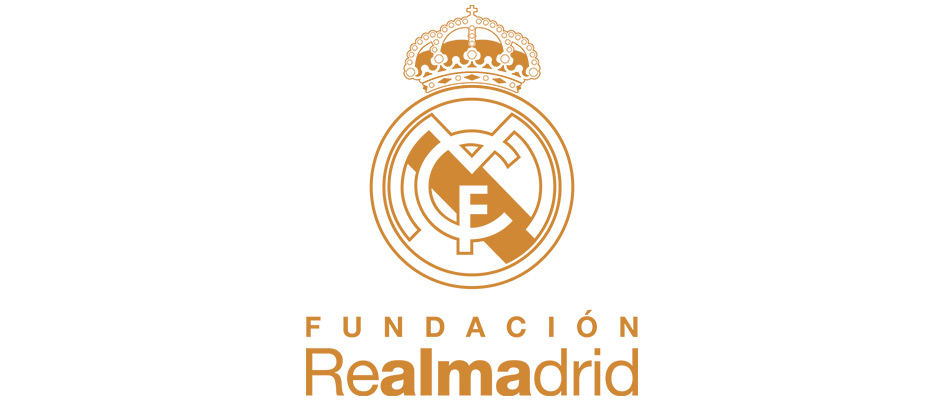

Welcome to the Official Website of Real Madrid FC.

The Foundation of Real Madrid FC
The Real Madrid Foundation is the instrument by which Real Madrid is present in society and develops its social and cultural awareness programmes.
Its main objective is to promote, both in Spain as well as abroad, the values inherent in sport, and the latter’s role as an educational tool capable of contributing to the comprehensive development of the personality of those who practice it. In addition, as a means of social integration of those who find themselves suffering from any form of marginalisation, as well as to promote and disseminate all the cultural aspects linked to sport.
The Real Madrid Foundation exists thanks to the collaboration of the different public authorities, thanks to the generous support it receives from important national and international companies through patronage and sponsorship agreements and, in particular, thanks to the individual donations made by thousands of Madrid’s fans, who wish to express their support and strengthen their bond with Real Madrid.The Foundation is audited annually and the results are presented to the Board of Trustees, to the Governing Authority for Foundations of the Ministry of Education and Sport, and are subsequently published in the club’s annual report and in the Foundation’s magazine.
Real Madrid's origins go back to when football was introduced to Madrid by the academics and students of the Institución Libre de Enseñanza, which included several Cambridge and Oxford University graduates. They founded (Sociedad) Sky Football in 1897, commonly known as La Sociedad (The Society) as it was the only one based in Madrid, playing on Sunday mornings at Moncloa. In 1900, conflict between members caused some of them to leave and create a new club, Nueva Sociedad de Football (New Society of Football), to distinguish themselves from Sky Football. Among the dissenters were Julián Palacios, recognized as the first Real Madrid president, Juan Padrós and Carlos Padrós, the latter two being brothers and future presidents of Real Madrid. In 1901 this new club was renamed as Madrid Football Club. Later, following a restructuring in 1902, Sky was renamed as "New Foot-Ball Club". On 6 March 1902, after a new Board presided by Juan Padrós had been elected, Madrid Football Club was officially founded.